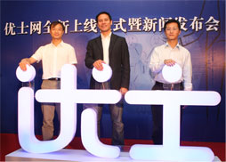
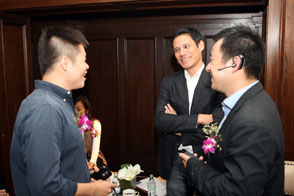
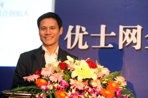
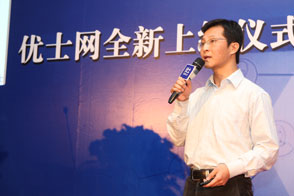
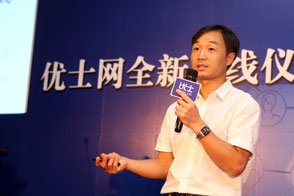

2010年10月19日，优士网网具有里程碑意义的新篇章在外滩2号华尔道夫酒店揭开序幕，在这样一座充满古典韵味的建筑里，优士网全新上线仪式新闻发布会隆重举行。50多家中外媒体记者和近20位优士网创始会员齐聚一堂，与优士网团队共同见证了这一激动人心的时刻。外滩华尔道夫酒店曾经是上世纪二十年代具有传奇色彩的上海总会所在地，古典欧式的建筑风格和颇具匠心的细节，不经让人的思绪飘回百年以前。而若干年后，优士网或将成为另一个互联网界的传奇和奇迹，为商务人士中所津津乐道。
此次新闻发布会的另一个主题是，优士网获得了千万级别人民币的天使投资，这无疑为优士网的长足发展加足了马力。优士网CEO兼联合创始人卢汉森先生在新闻发布会现场表示："我们相信个人事业上的成功需要依赖人脉网络，而国家竞争力的提升也要依赖商业网络的运行效率。我们存在的意义不仅在于帮助个人更好的发挥人际网络的作用，更在于使中国拥有更好的商业环境。"
整场发布会历时近2个小时，落下帷幕之时，与会者仍热情不减，现场随处可见新老朋友交谈的身影，再次验证了优士网所倡导的"人脉"效应。
精彩瞬间
虽然您无法亲临现场，请跟随我们的图片，重温这些精彩的瞬间。
下午2点，嘉宾、媒体签到
 |
 |  |
| 优士网创始会员、51网副总裁龙振威签名留念 | 优士网CEO兼联合创始人卢汉森先生与创始会员代表交流 (左：易传媒移动互联网业务负责人及产品和战略总监蒯佳祺， 右：移动2.0论坛创始人王利杰) |
创始会员相谈甚欢 (左：传智投资合伙人黄家麟，右：汉能投资董事总经理Ker GIBBS) |
下午2点半，新闻发布会正式开始
 |
 |
 |
| 主持人（优士网市场传讯总监徐洁）宣布活动正式开始 | 新闻发布会现场高朋满座 | 优士网CEO兼联合创始人卢汉森先生致辞， 并幽默地称自己为"小卢" |
 |
 |
 |
| 投资人代表楼云立女士致辞 | 优士网三位联合创始人点亮优士Logo上象征优士网未来的"启明星"
(自左到右：CTO何金福、CEO卢汉森、CPO张月) |
优士网CPO兼联合创始人张月发表题为 "市场和产品策略——质量和速度的平衡"的主题演讲 |
|  |  |
 |
| 优士网CTO兼联合创始人何金福发表题为"创新和执行力——速度与激情的碰撞"的主题演讲 | 优士网创始会员、新民网常务副总编辑张弘女士致贺词 | 优士网创始会员、易传媒移动互联网业务负责人及产品和战略总监蒯佳祺先生致贺词 |
 |
 |
|
| 优士网创始会员、安居客董事贾逸恬先生致贺词 | 优士网三位高层就媒体感兴趣的问题答记者问 |
下午4点， 新闻发布会正式结束
 |
||
| 第一财经频道采访优士网CEO兼联合创始人卢汉森先生 | 多家主流媒体对优士网三位联合创始人进行采访 |